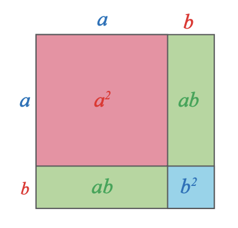

C14.2 - Descompuneri în factori utilizând reguli de calcul în ℝ (formule de calcul prescurtat)
Definiție

- Privește cu atenție imaginea și stabilește care dintre afirmații este corectă.
- „Aria pătratului mare este a2+2ab+b2.”
- „Aria pătratului mare este (a+b)2.”
-
Este adevărată relația: a2+2ab+b2=(a+b)2?
-
Completează expresiile astfel încât să obții relații adevărate:
- a) a2−2ab+b2=(…)2;
- b) a2−b2=(a−…)(⋯+b).
- O metodă de descompunere în factori este utilizarea formulelor de calcul prescurtat.
Formulele de calcul prescurtat pot fi scrise și astfel:
- a2+2ab+b2=(a+b)2 (pătratul sumei)
- a2−2ab+b2=(a−b)2 (pătratul diferenței)
- a2−b2=(a−b)(a+b) (diferența de pătrate)
Exemplul 1
Descompune în factori expresiile algebrice: E(x)=x2+6x+9 și E(x,y)=4x2−12xy+9y2, E(x,y)=4x2−y2.
Soluție:
E(x)=x2+6x+9 este o expresie algebraică care are trei termeni. Mă pot gândi la una dintre formulele a2+2ab+b2=(a+b)2 sau a2−2ab+b2=(a−b)2. Pentru aceasta trebuie să identific a2, b2 și 2ab.
Analiza procesului:
Pentru că 2ab are semnul plus:
E(x)=x2+6x+9=(x+3)2
- Identificarea termenilor:
- a2=x2⇒a=x
- b2=9⇒b=3
- Verificarea termenului dublu:
- 2ab=2⋅x⋅3=6x
Concluzie: Se poate folosi formula a2+2ab+b2=(a+b)2
Exemplul 2
E(x,y)=4x2−12xy+9y2 este o expresie algebraică care are trei termeni. Mă pot gândi la formulele a2+2ab+b2=(a+b)2 și a2−2ab+b2=(a−b)2. Pentru aceasta trebuie să identific a2,b2 și 2ab.
Analiza procesului:
Pentru că 2ab are semnul minus:
E(x,y)=4x2−12xy+9y2=(2x−3y)2
- Identificarea termenilor:
- a2=4x2⇒a=2x
- b2=9y2⇒b=3y
- Verificarea termenului dublu:
- Verific dacă 2ab=12xy
- 2ab=2⋅2x⋅3y=12xy
Concluzie: Se poate folosi formula a2−2ab+b2=(a−b)2
Exemplul 3
E(x,y)=4x2−y2 este o expresie algebraică care are doi termeni și între ei semnul minus. Mă gândesc la formula a2−b2=(a−b)(a+b). Pentru aceasta trebuie să identific a2 și b2
Analiza procesului:
E(x,y)=4x2−y2=(2x+y)(2x−y)
- Identificarea termenilor:
- a2=4x2⇒a=2x
- b2=y2⇒b=y
Concluzie: Se poate folosi formula a2−b2=(a+b)(a−b)